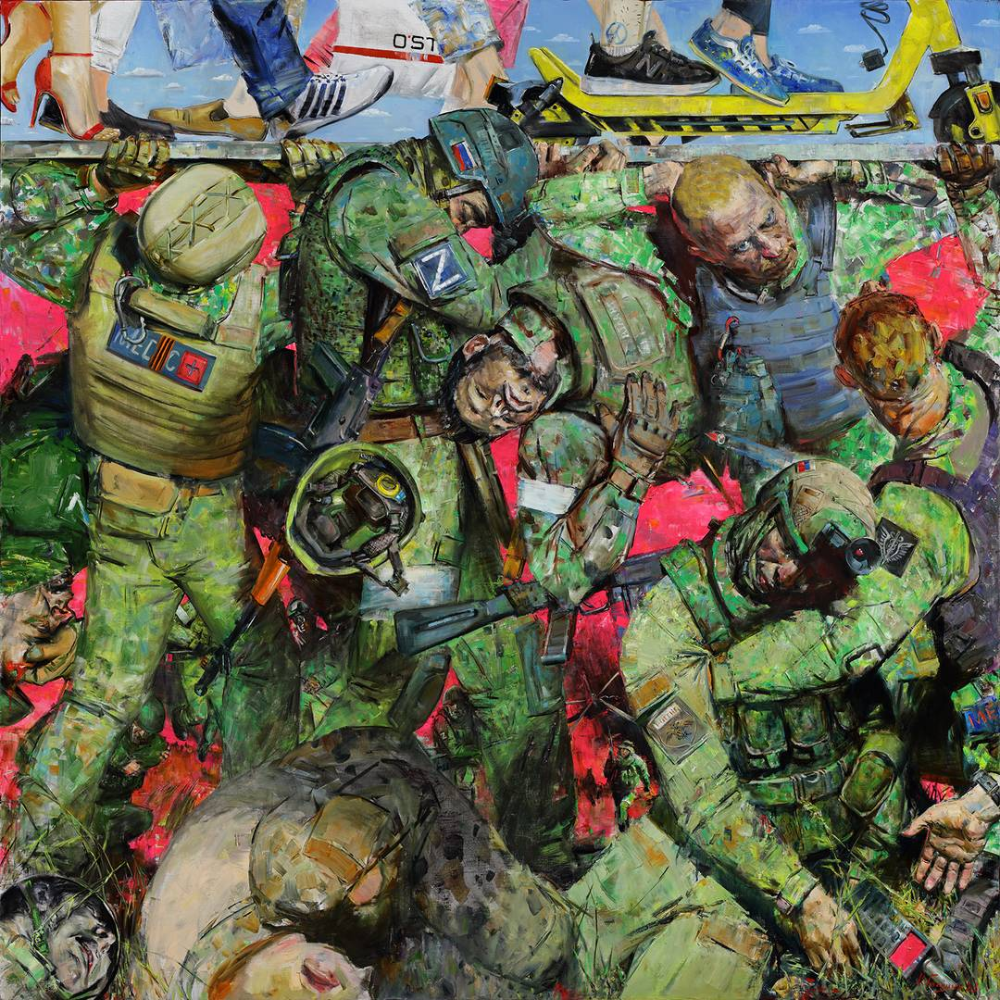

Это одно из самых известных полотен художницы. На нём изображены воины в современной экипировке, которые своими плечами буквально подпирают своды разрушенного здания. Картина наглядно иллюстрирует болезненный раскол и одновременно глубокую связь современной реальности.
Она показывает, что пока обычные граждане бегут по кругу своих привычных будней, прямо под ними, невидимые для обывателя герои «несут свой крест». Бойцы ценой невероятных усилий, здоровья и жизней держат на своих плечах хрупкий мир тех, кто остался в тылу.